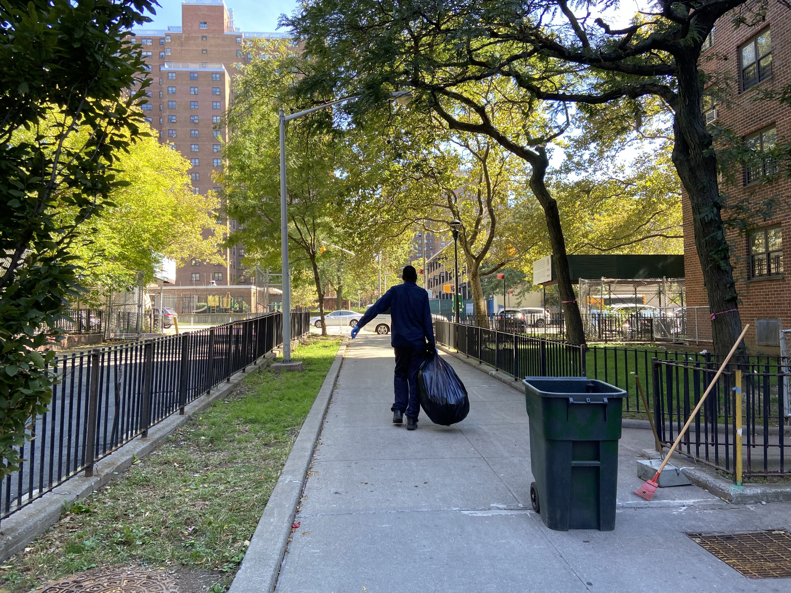

Rat Are on the Rise: How is NYC Responding?
In 2021, sightings were up 2/3 compared to 2019.
By: Mary Cunningham
October 18, 2022

Residents of Mitchel Housing in the Bronx have cited multiple issues with rat infestations. Photo credit: Mary Cunningham
Increase in Rats Is Cause for Concern
The data on rats is in and the results are nothing to celebrate. According to 311 complaints, rat sightings are up in all five boroughs, compared to years past. During a June 2022 joint Committee on Sanitation and Solid Waste Management and Committee on Public Housing hearing, Chi Ossé, Council Member for New York City's 36th District, said that in 2021, rat sightings were up 2/3 compared to 2019. Broken down by borough, there was a 52% increase in sightings in the Bronx, a 66% increase in Brooklyn, a 77% increase in Manhattan, a 54% increase in Queens, and a 1% increase in Staten Island over the last three years.
On top of the uptick in sightings, rats have become a serious public health concern. At the June 2022 hearing, Ossé said that 13 New Yorkers were hospitalized last year due to a kidney and liver disease spread by rats.
One of the biggest drivers of rats in New York City is garbage. Open trash cans, piles of garbage bags, and food scraps are all magnets for rats. This issue came to head during the COVID-19 as many restaurants switched to an outdoor dining model to stay afloat. Now, many New Yorkers argue that moving service outside has fueled the rat problem.
Another possible culprit for the rise in rats in the city is climate change. Healthline reports that warmer winters have created ideal conditions for rodents to reproduce. As temperatures increase due to climate change, rodents are having more litters – creating an unwanted boom in the city’s rat population.
The City’s 'Rat Action Plan'
To address the increase in rats throughout the city, the Sanitation Committee introduced the 'Rat Action Plan' in January 2022, a package of bills for rat mitigation. There are five major parts in the plan:
Treatment areas: Indentify zones in the city to target by April 2023. These districts would be selected based on a number of factors including the number of 311 requests for rat treatment and the number of rat exterminations that have taken place there.
Progress report: Require the Department of Health and Mental Hygiene to share an annual progress report each April. This report would include metrics on how the department is measuring success, specific benchmarks and timelines for the mitigation plan, more.
Contain garbage: Request rodent-proof trash bins in rat mitigation zones. One of the biggest drivers of rats in New York City is garbage. By eliminating open trash cans in areas prone to rats, the Sanitation Committee hopes to stem this issue.
Trash collection: Set designated times for buildings to put out trash and recyling for collection. This applies to buildings with nine or more units. The department also mandates that all items left outside for collection must be properly covered.
Developer plan: Mandate developers to come up with a preconstruction rat mitigation plan in neighborhoods where they want to build. This would guarantee that developers have pest management professionals at the ready if there is a rat issue during construction.